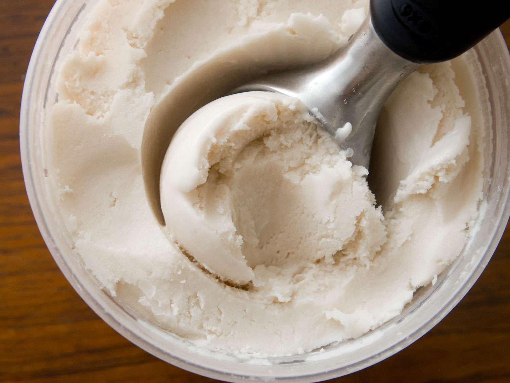

Vanilla ice cream

Vanilla ice cream (not my photo)
Description
I bought an ice cream machine for myself last Christmas and fell in love with this vegan vanilla ice cream recipe from Serious Eats so I wanted to showcase it here.
Ingredients
- 2 cans of coconut milk
- 1/4 cup corn syrup, should be clear
- 3/4 cup sugar
- 2 tsp vanilla extract
- 1 tbsp coconut malibu
- 1 tsp salt, to taste
Steps
- In a medium saucepan combine coconut milk, coconut cream, corn syrup, and sugar and cook over medium heat, stirring frequently, until mixture comes to a simmer. Transfer mixture to blender, cover very tightly, and blend for 30 seconds. (Alternately use immersion blender directly in pot.) Pour into an airtight container, stir in vanilla extract and whiskey, then add salt to taste.
- Cover mixture and chill in refrigerator until it is very cold (at least 45°F, about 4 hours), then churn in ice cream maker according to manufacturer's instructions. Transfer to an airtight container and chill in freezer until ice cream is firm enough to scoop, about 5 hours.